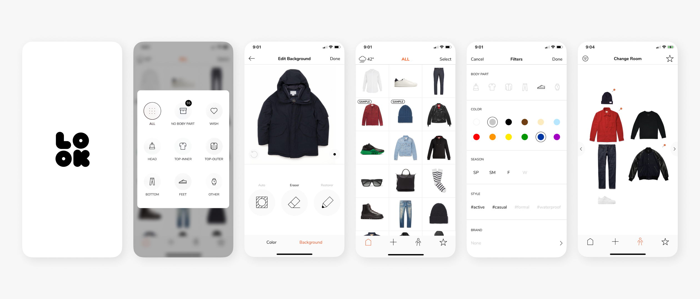
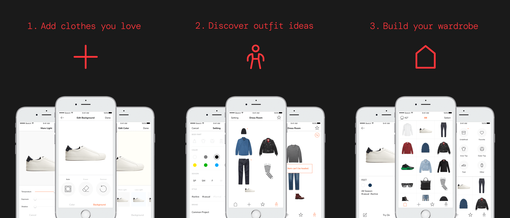
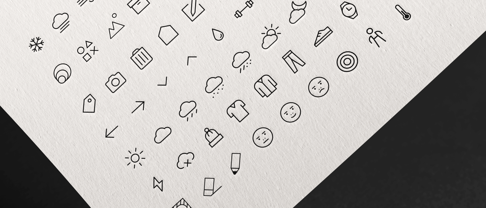

Two friends, one year, three hundred thousand wardrobes.
A closet full of clothes
and nothing to wear.
Jay and I weren't trying to build a company. We were trying to solve our own problem. Most people own dozens of clothes they barely think about. Every morning, they pick from the same five things on top. Wardrobe apps existed, but they all looked like spreadsheets with photos. We wanted something that felt like a tool you'd actually open. No funding, no investors, no roadmap longer than a weekend. The whole product came down to three moves: add the clothes you love, plan outfits, build your wardrobe.

lookscope/02.png · 21:9"Let's just make the thing— Where the whole project started
we'd actually use ourselves."
Every detail, decided
by the same two people.
I led the full design end-to-end. Logo, color, typography, icons, every screen, every micro-interaction. The app handled a lot: importing clothing photos with background removal, sorting by category and color, filtering by weather and occasion, building outfits visually, saving favorites. With no team to split the work, every decision came back to the same desk. That kept the app clean. If a feature couldn't justify itself, it didn't ship.

lookscope/03.png · 21:9Where design meets engineering,
something has to give.
A year of working with one engineer taught me lessons no team could have. We disagreed often — sometimes for weeks — about whether a feature was worth building. The fix wasn't picking a winner. It was sitting down, talking through trade-offs, and finding a third option together. The harder lesson was time. Without a client or deadline, the project stretched longer than it should have. Even a passion project needs milestones. "We'll get to it" is the most expensive sentence two collaborators can say.

lookscope/04.png · 21:9The app we built for ourselves
found everyone else.
Lookscope launched on the App Store and, to our surprise, kept growing. Apple featured it as an Editor's Recommendation of the Week. Users started subscribing — one month, six months, a year at a time. Years later, the app is still live, still updated, still earning. Two people, one year, a quiet product that found its audience. It taught me what I later brought to Thimble: how to own the whole experience, how to speak for users when no one else is in the room, how to keep going without anyone telling you to.
 lookscope/05.png · 21:9
lookscope/05.png · 21:9